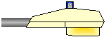
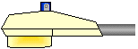

Streetlights by Line Material (Also known as McGraw-Edison)

Older Line Material Ovalites, Seattle,
WA

A true ovalite in Wilmette, IL

Line Material Unistyle 1000 (on the
right)

Power Door Unistyle 400, UNM campus,
Albuquerque, NM

Line Material Unistyle 400, City of LA
Museum


A Unistyle 175 in
Kent, WA (Incorrect Lens)- Removed 2/6/98, added to my collection
2/7/98.

Line Material Unistyle 175

A Line-Material Night Sentry in Lewiston,
ID

Unidoor 400 (HPS), Lynnwood,
WA

Unidoor 175, Wilmette, IL

Unidoor 175, City of LA Display (incorrect
lens)